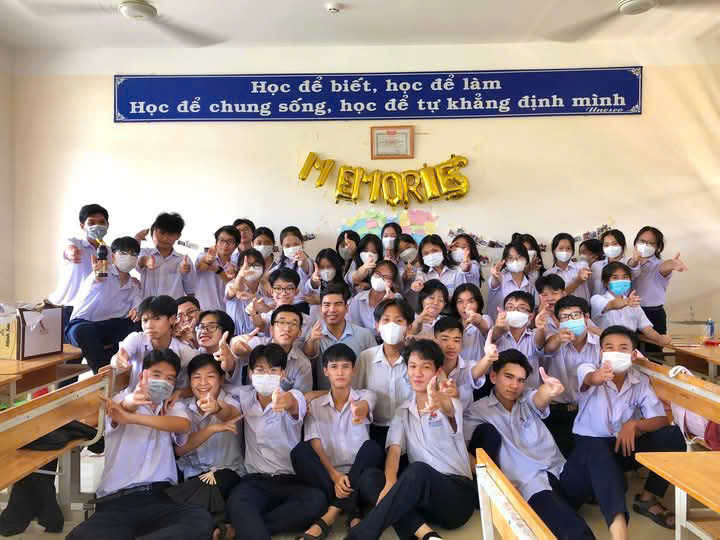

Hành trình 3 năm thanh xuân của members 12A6 đã sắp tới trạm cuối. Khoảng thời gian 3 năm có lẽ không dài, nhưng cũng không ngắn để chúng mình vẽ nên bức tranh đầy kỉ niệm khó quên của những năm tháng cấp 3 nhiều cảm xúc. Nhớ khoảng thời gian ban đầu còn bỡ ngỡ, ngại ngùng vì những gương mặt chưa quen, mà giờ đây chúng ta như một gia đình với sự thân thiết và đoàn kết qua bao hoạt động, học tập cùng nhau. Mình tin rằng khi mỗi chúng ta bước ra mỗi vùng đất ước mơ khác nhau, thì mọi người vẫn sẽ nhớ đến những câu chuyện, những người bạn trên chuyến tàu 2022-2025 của tập thể chúng ta. Đôi lúc lại giận hờn, dỗi nhau nhưng bằng sức mạnh của tình bạn chúng ta lại cùng vui cười, chở che nhau như một đàn én không thể thiếu nhau. Để xây dựng nên tập thể 12A6 đầy mạnh mẽ như hôm nay không thể nào thiếu sự có mặt của thầy cô giáo chủ nhiệm:
- Thầy: Diệp Thái Vân.
- Vừa là giáo viên chủ nhiệm lớp 10 và vừa đảm nhiệm dạy vật lý cho lớp.
- Thầy Vân với tên gọi thân quen là Thái Mây. Đã mang đến cho chúng mình bao điều tuyệt vời và bất ngờ.
Chủ nhiệm đầu vào của một lớp chọn, quản lý 46 còn cừu non ngây thơ, đã đã đôi lần bất lực và nhiều đêm trằn trọc để khắc phục vị thứ thi đua của lớp.
Cuối cùng sự cố gắng của người đàn ông tận tụy ấy đã có hy vọng khi từ vị trí thứ 10 chúng mình lên được vị trí thứ 6. Thầy là một cây hài chính hiệu, chúng mình rất trân quý thầy!
- Cô: Lê Thị Thủy.
- Vừa là giáo viên chủ nhiệm lớp 11 vừa đảm nhiệm dạy toán cho lớp.
- Cô Thủy một người cô nhiệt tình và đầy tâm huyết. Cô rất thương chúng mình và chúng mình cũng rất thương cô.
Cô rất hay cười tạo cảm giác rất thoải mái. Chúng mình may mắn khi được cô dạy môn toán năm nay.
Cô luôn tạo điều kiện để chúng mình có cơ hội học tập, khắc phục điểm số. Cô là một người giáo viên vô cùng tận tâm, tràn đầy sức sống và kinh nghiệm
để tạo ra không gian và điều kiện học tạp tốt nhất trong mỗi tiết dạy. Chúng mình rất kính trọng cô!
- Cô: Dương Thị Kim Trúc.
- Vừa là giáo viên chủ nhiệm lớp 12 cừa đảm nhiệm dạy tiếng anh cho lớp.
- Cô Trúc là một giáo viên rất năng động và đầy trách nhiệm. Cô giống như người mẹ thứ hai của lớp.
Cô lo lắng cho chúng mình từng tí trong các hoạt động. Và tính cách cô rất teen. Tạo cảm giác gần gũi và thân thiện
với các bạn và kể cả các giáo viên trong trường. Cô rất thương chúng mình, nên lúc nào cũng căn dặn kĩ vì chúng mình đang
trong giao đoạn rất quan trọng. Cô là một giáo viên giàu tình cảm và trách nhiệm.